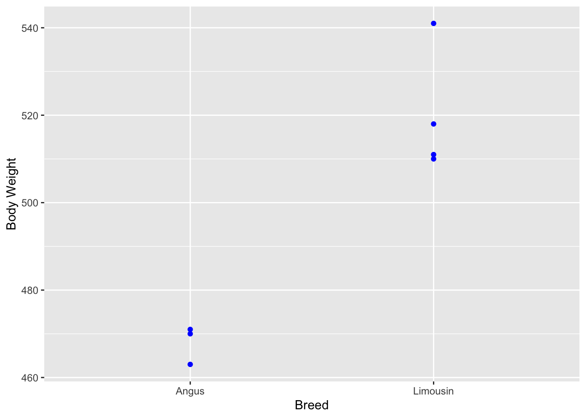

This is an update on the synthesis and derivation notebook of the two previous years. After the lecture, we start with the development of new material. The new material is only based on group means and contrasts of group means.
Data
We are using the dataset on body weight and breed.
Rows: 10 Columns: 3
── Column specification ────────────────────────────────────────────────────────
Delimiter: ","
chr (1): Breed
dbl (2): Animal, Body Weight
ℹ Use `spec()` to retrieve the full column specification for this data.
ℹ Specify the column types or set `show_col_types = FALSE` to quiet this message.
Let us assume that we are interested in the difference between body weights of animals of the breed Limousin compared to the body weight of animals of breed Angus. This difference can be visualized by the following plot
# filter datalibrary(dplyr)
Attaching package: 'dplyr'
The following objects are masked from 'package:stats':
filter, lag
The following objects are masked from 'package:base':
intersect, setdiff, setequal, union
library(ggplot2)plot_bw_diff_li_an <-ggplot(tbl_bw_an_li, aes(x = Breed, y =`Body Weight`)) +geom_point(color ="blue")plot_bw_diff_li_an

The difference of mean body weight between animals of the two breeds can be shown by fitting a regression of body weight on a breed code where Angus animals are assigned the code \(0\) and animals of breed Limousin are assigned the code \(1\).
The intersection of the red regression line with \(x=0\) on the one hand shows the intercept of the regression line and on the other hand corresponds to the mean Angus body weight
Old Stuff Below Here
The material from 2024 and before was mostly based on explaining parameter estimates via estimable functions of solutions of least squares normal equations. While this is possible and can work, it adds un-necessary complexity. For documentation, the previously used material is left in here.
References
[1] Notebooks on contrasts from previous years [2] Material from https://bookdown.org/pingapang9/linear_models_bookdown/chap-contrasts.html
Data
The data set used is the one on a synthetic observation and on breeds of animals.
Rows: 6 Columns: 3
── Column specification ────────────────────────────────────────────────────────
Delimiter: ","
chr (1): Breed
dbl (2): Animal, Observation
ℹ Use `spec()` to retrieve the full column specification for this data.
ℹ Specify the column types or set `show_col_types = FALSE` to quiet this message.
Rows: 10 Columns: 3
── Column specification ────────────────────────────────────────────────────────
Delimiter: ","
chr (1): Breed
dbl (2): Animal, Body Weight
ℹ Use `spec()` to retrieve the full column specification for this data.
ℹ Specify the column types or set `show_col_types = FALSE` to quiet this message.
Start by looking only at breeds Angus and Limousin in the dataset on body weight. Then use the dummy coding where Angus animals receive a value of \(0\) and Limousin animals receive a code of \(1\). The regression of body weight on that dummy coding results in a regression line that goes through the mean body weights for both breeds. That means, we get
The intersection of the regression line at the two values \(0\) and \(1\) for BreedFactor are at the mean value for body weight for the two breeds AN and LI. The writing the parameter vector \(b\) as
We see in the next section how to express \(b\) as contrasts of group means \(M_{AN}\) and \(M_{LI}\).
Idea of Contrasts
According to chapter 7 of [2], contrasts can be explained as follows.
A contrast is a linear combination of parameters or statistics. An alternative term for “linear combination” is weighted sum. We are currently focusing on statistics from two levels of a given factor. In our dataset this corresponds to two levels of the factor breed. As an example, we have a look at the observation for Simmental and for Angus animals.
Let \(M_{AN}\) be the mean observation for all animals of breed Angus and \(M_{SI}\) be the mean observation for all Simmental animals. The sum of the two means can be written as
As seen in the previous section, the estimate of the parameter vector \(b\) can be written as contrasts of group means and as a consequence, the group means can be written as a function of parameter estimates
With this, the vector of group means \(m\) is expressed as linear function or linear transformation of the vector of parameter estimates $ $. Solving for \(\widehat{b}\) yields the parameter estimates as linear function of group means.
\[\widehat{b} = (L^T)^{-1} \cdot m\]
As shown below, the matrix \(L^T\) is used to determine what type of contrasts are used in R.
Contrasts in R
For a given dataset, the contrast matrix can be obtained as a result of the function contrasts(). For our original example with three breeds this yields in
The above shown contrasts matrix shows in the rows, the original factor levels in the dataset. The columns stand for the new variables that are introduced in the re-dimensioned model. How the codes for the new model are assigned to the observations can be seen from the result of the function model.matrix.
The first row indicates which group mean is used for the intercept. The remaining rows represent the estimable functions used for the effect with the corresponding row name.
Validation
The results on the investigated connection between contrasts and estimable functions is validated with our example dataset. For this validation, we first need a set of solutions to the least squares normal equations. As the first step, we set up the design matrix \(\mathbf{X}\) and use it to compute the crossproduct \(\mathbf{X}^T\mathbf{X}\)
The intercept in the treatment contrasts are computed as the mean observations for the first factor level. For the factor Breed this corresponds to the mean of all animals of breed Angus. This is verified by
Based on the matrix of estimable functions, the effect assigned to the BreedLimousin corresponds to the difference between the third and the second component of the solution vector
mat_b_sol[3] - mat_b_sol[2]
[1] 52
The effect assigned to BreedSimmental is the difference between the last and the second component of the solution vector
mat_b_sol[4] - mat_b_sol[2]
[1] 21.33333
These effects can also be found in the summary output of the lm -object.
lm_bw_br <-lm(`Body Weight`~ Breed, data = tbl_bw_breed)(smry_lm_bw_br <-summary(lm_bw_br))
Call:
lm(formula = `Body Weight` ~ Breed, data = tbl_bw_breed)
Residuals:
Min 1Q Median 3Q Max
-10.0000 -7.5000 -0.1667 2.7500 21.0000
Coefficients:
Estimate Std. Error t value Pr(>|t|)
(Intercept) 468.000 6.097 76.758 1.68e-11 ***
BreedLimousin 52.000 8.066 6.447 0.000351 ***
BreedSimmental 21.333 8.623 2.474 0.042575 *
---
Signif. codes: 0 '***' 0.001 '**' 0.01 '*' 0.05 '.' 0.1 ' ' 1
Residual standard error: 10.56 on 7 degrees of freedom
Multiple R-squared: 0.8597, Adjusted R-squared: 0.8196
F-statistic: 21.44 on 2 and 7 DF, p-value: 0.001035